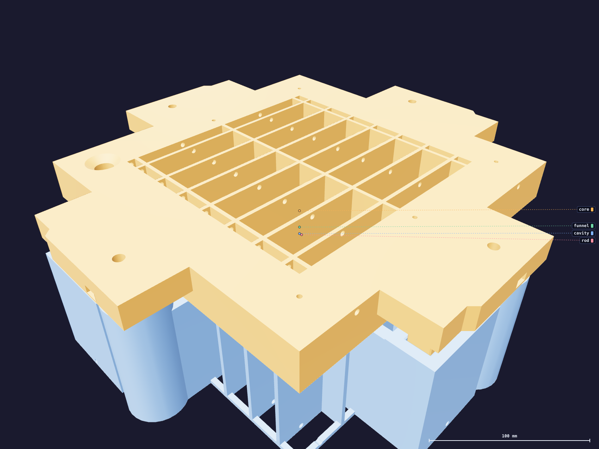

The job2
What you are building
A two-part mold. The cavity forms the outside of the funnel and is poured into. The core forms the inside and drops onto it. A ground steel dowel forms the spout bore. Four screw jacks lift the core off the cured silicone.

Two documents
This one builds the mold: three print jobs, a finishing process measured on a coupon, four steel stations fitted. It ends with a tool you keep. Its companion, Casting a funnel, is the one you take to the bench with gloves on — it runs on a clock, because mixed silicone has a working time.
Reading the pictures
Every picture is the mold's own geometry, staged in the state the step leaves it.
Coral is the body that step moves; the cavity is teal, the core ochre, the silicone
dark, and anything blue-grey is a thing on the bench rather than part of the mold.